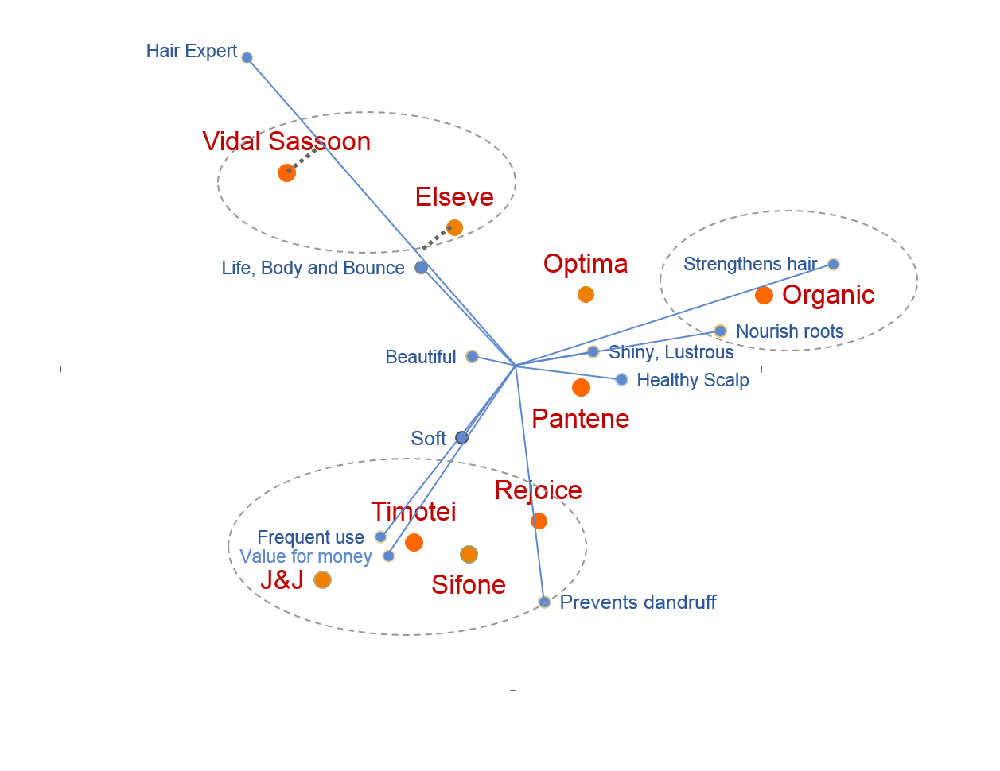

Представьтесь
Предварительные замечания
Анализ соответствий (CA) и множественный анализ соответствий (MCA) относятся к методам снижения размерности для категориальных данных и позволяют визуализировать связь между категориями переменных в пространстве низкой размерности. CA применяется к двумерным перекрестным таблицам (часто – частотным), тогда как MCA расширяет подход на несколько номинальных/порядковых переменных.
Приведем несколько кейсов, где анализ соответствий может быть использован для решения прикладных задач.
1. Маркетинг: образ и карта воспрития бренда (perceptual map)
- В такого рода исследованиях исходными данными являются результаты опроса потребителей по шкалам, таким как «Какие из перечисленных брендов вы ассоциируете с атрибутами X, Y, Z» (надёжный, модный, семейный, недорогой и т.п.).
- Затем строится перекрестная таблица «бренды × имиджевые атрибуты» (доли упоминаний) и проводится анализ соответствий; на карте расположены и бренды, и атрибуты. Пример исследования
- Как интерпретировать? Близость бренда к атрибуту показывает, что он
ассоциируется с этим образом; близкие бренды конкурируют за одну
позицию, удаленные занимают отличающиеся ниши.
- Так, анализ соответствий был проведен для рынка шампуней и профилей брендов, результаты представлены следующим образом (пример взят из следующего источника:
{kind=link}

2. Поведение и критерии покупательского выбора
- Еще один пример из области маркетинговых исследований: исходными данными выступают результаты анкетирования с номинальными/порядковыми ответами о критериях покупки (цена, вкус, бренд, страна происхождения), типах магазинов, частоте потребления и социально‑демографических признаках. Источник для дополнительного чтения.
- Модель: проводится множественный анализ соответствий по совокупности категориальных переменных.
- Интерпретация: карта показывает кластеры потребителей (группы уровней переменных), «притянутых» к разным атрибутам. Так, в одной из работ о критериях покупки пива MCA позволил выделить чёткие сегменты и связать атрибуты продукта с предпочтениями групп покупателей. Пример статьи.
3. E‑commerce: критерии онлайн‑покупок по категориям товаров
- Исходные данные: опрос пользователей, где для различных товарных категорий (электроника, одежда, продукты, книги) фиксируются значимые критерии онлайн‑покупки (доставка, цена, бренд, отзывы, безопасность платежа и др.). Пример исследования.
- Модель: строится таблица «категория товара × критерий выбора», проводится CA или MCA, иногда с добавлением демографических переменных как дополнительных.
- Анализ позволяет сегментировать пользователей, их стратегии коммуникации и опыт использования маркетплейса - UX (фильтры, подсказки) под разные товарные группы.
4. Исследование политических предпочтений: карта позиций партий и установок
- Исходные данные: опрос электората, где измеряются установки по политическим вопросам, самоидентификация, поддержка партий Хороший пример.
- Модель: MCA по множеству вопросов (позиции по миграции, налогам, морали, гендерной политике и т.п.), партии и группы избирателей часто добавляются как категории/дополнительные переменные.
- Интерпретация: двухмерная карта отражает латентные измерения идеологии (например, «социальный либерализм – консерватизм» и «экономический левый – правый») и показывает, какие ответы и какие партии группируются вблизи друг друга. - Это помогает выявлять идеологические кластеры внутри партий и различия между «ядерными» и «плавающими» избирателями, а также использовать карту как визуальную опору для коммуникационных стратегий.

В рамках данного тьюториала мы разберем, как проводить простой и множественный анализ соответствий в R.
Тестовые вопросы
Вопрос 1
Что является входными данными для классического анализа соответствий (CA)?
Вопрос 2
Что представляют собой координаты строк и столбцов в пространстве главных осей при CA?
Вопрос 3
Как интерпретируется расстояние между двумя категориями на карте CA?
Вопрос 4
Какой критерий в CA и MCA чаще всего рассматривают аналогом дисперсии в PCA?
Вопрос 5
Какой тип матрицы обычно анализируется в MCA (при методе по умолчанию)?
Вопрос 6
Что означает высокая сумма cos2 для категории на первых двух осях MCA?
Вопрос 7
Для чего используют функции fviz_ca_row() и
fviz_ca_col() из пакета factoextra?
Вопрос 8
Какой объект создает функция CA() из пакета
FactoMineR?
Вопрос 9
В чем основное отличие MCA от CA?
Вопрос 10
Как можно добавить количественные переменные в MCA в FactoMineR?
Вопрос 11
Какой тип анализа использовать, если в данных смешаны количественные и категориальные переменные и нужно рассматривать их совместно?
Вопрос 12
Какой функцией из пакета factoextra удобно визуализировать результаты MCA (индивиды и категории вместе) из FactoMineR?
Вопрос 13
Какой аргумент функции MCA() позволяет указать
дополнительных (неактивных) индивидов?
Вопрос 14
Как можно получить собственные значения и долю объясненной инерции для объекта MCA/CA из FactoMineR с помощью factoextra?
Вопрос 15
На карте MCA категории одной и той же переменной образуют “звезду”. Что означает расположение центра этой звезды близко к началу координат?
Упражнения: Анализ соответствий (CA)
Разберем возможности анализа соответствий используем данные
children из пакета FactoMineR.
Данные взяты из книги Traitements Statistiques des Enquêtes (ред. D. Grange, L. Lebart, Dunod, 1993).
В оригинальном исследовании респондентам задавали вопрос:
«По вашему мнению, какие причины могут заставить женщину или пару колебаться в решении иметь детей?». Индивидуальные ответы были агрегированы в таблицу сопряженности (contingency table), включенную в пакет FactoMineR под названиемchildren.Набор данных представляет собой дата‑фрейм размером 18 строк × 8 столбцов.
Строки: 18 возможных причин колебаний относительно рождения детей (например, финансовые трудности, жилищные условия, карьерные соображения и т.п. — конкретные формулировки в документации не перечислены, но трактуются именно как «reasons mentioned»).
Столбцы: 8 категорий респондентов, заданных комбинациями образования и возраста; в описании они указаны как «different categories (education, age) people belong to».
Ячейка \((i,j)\): количество упоминаний причины \(i\) в группе \(j\).
Столбцы (уровень образования и возраст):
- unqualified – без квалификации, без диплома
- cep – диплом уровня CEP (аналог базового свидетельства об
образовании)
- bepc – диплом уровня BEPC (неполное среднее
образование)
- high_school_diploma – аттестат о среднем образовании
- university – высшее образование (университетский
диплом)
- thirty – возраст около 30 лет (30 лет / 30–39)
- fifty – возраст около 50 лет (50 лет / 40–49)
- more_fifty – старше 50 лет
Строки (причины нежелания иметь детей):
- money – деньги, финансовые средства
- future – будущее (неуверенность в будущем)
- unemployment – безработица
- circumstances – обстоятельства (жизненные
обстоятельства)
- hard – трудности, тяжело
- economic – экономические условия
- egoism – эгоизм (желание жить для себя)
- employment – занятость, работа (наличие/поиск работы)
- finances – финансовое положение
- war – война
- housing – жильё, жилищные условия
- fear – страх
- health – проблемы со здоровьем
- work – работа (трудовая нагрузка, карьера)
- comfort – комфорт, удобства
- disagreement – разногласия (в семье/с партнёром)
- world – мир (состояние мира, общества, «мир устроен
плохо»)
- to_live – жить (качество жизни / «как жить дальше»)
Упражнение 1 — Смотрим на данные
Выведите на экран данные набора `children’.
childrenДля анализа соответствий нам нужна таблица без пропусков. Создайте
таблицу children2, в которой будут все столбцы и строки с 1
по 14.
Упражнение 2 — Запуск CA
Выполните анализ соответствий на данных
children2с помощьюCA()из пакетаFactoMineR(без графиков).Сохраните результат в объект
res.ca.
# ваш кодУпражнение 3 — Собственные значения и инерция
Поскольку анализ соответствий – это метод снижения размерности, в результате взамен исходных переменных (строк и столбцов) в нашей таблице мы должны получить новые измерения.
Основная идея напоминает метод главных компонент, однако вместо обычной дисперсии здесь используется понятие инерции, связанной с \(\chi^2\)‑расстояниями.
Как считаются собственные значения в CA
Исходная таблица нормируется до относительных частот
В таблице с частотами (это наша таблицаchildren) \(N = (n_{ij})\) значение в каждой ячейке делится на сумму всех частот по таблице \(n = \sum_{i,j} n_{ij}\).
Получается матрица относительных частот: \[ P = (p_{ij}), \quad p_{ij} = \frac{n_{ij}}{n}, \] которую часто называют correspondence matrix.Подсчитываются маргинальные распределения (массы строк и столбцов)
\[ r_i = \sum_j p_{ij} \quad (\text{масса строки}), \qquad c_j = \sum_i p_{ij} \quad (\text{масса столбца}). \]Подсчитываются профили строк и столбцов
- Профиль строки \(i\): условные
вероятности \(p_{ij} / r_i\)
(распределение по столбцам при фиксированной строке).
- Профиль столбца \(j\): \(p_{ij} / c_j\) (распределение по строкам).
- Профиль строки \(i\): условные
вероятности \(p_{ij} / r_i\)
(распределение по столбцам при фиксированной строке).
Строится матрица стандартизированных остатков
\[ S = D_r^{-1/2} (P - r c^\top) D_c^{-1/2}, \] где \(D_r, D_c\) — диагональные матрицы масс, в которых на диагонали находятся \(\frac{1}{\sqrt{r_i}}\) или \(\frac{1}{\sqrt{c_i}}\).
Сингулярное разложение матрицы S
На \(S\) делается сингулярное разложение (SVD), откуда и берутся сингулярные значения \(\sigma_k\), их квадраты \(\lambda_k = \sigma_k^2\) — это собственные значения, а их сумма — общая инерция.
\[ S = D_r^{-1/2}(P - r c^\top) D_c^{-1/2} = U \Sigma V^\top, \]
Каждая ось (Dim k) соответствует собственному значению \(\lambda_k\), которое показывает, сколько «информации» (вариации профилей в \(\chi^2\)-метрике) она объясняет.
Что такое инерция и как её интерпретировать
В CA термин инерция — это аналог дисперсии в PCA, но измеренный в \(\chi^2\)-метрике.
Общая инерция двухмерной таблицы: \[ I = \frac{\chi^2_{\text{таблицы}}}{n}, \] то есть общее значение критерия Пирсона \(\chi^2\), поделенное на сумму всех частот (объем выборки).
Эта же величина равна сумме всех собственных значений: \[ I = \sum_k \lambda_k. \]
Процент инерции, объясненный осью \(k\): \[ \text{Perc}_k = \frac{\lambda_k}{\sum_j \lambda_j} \times 100\%. \]
Интерпретация:
Инерция измеряет, насколько сильно профили строк и столбцов отклоняются от ситуации статистической независимости.
Если первая ось объясняет, например, 48% инерции, а вторая ещё 40%, то в плоскости (Dim1, Dim2) уже «видно» почти 88% всей структуры ассоциаций между строками и столбцами.
Чем больше доля инерции на первых осях, тем более информативна двумерная карта: она хорошо восстанавливает структуру зависимостей в исходной таблице (почти весь \(\chi^2\)).
Задание:
- Извлеките собственные значения и долю объясненной инерции с помощью
get_eigenvalue(res.ca)и сохраните результат в объектeig.ca. - Выведите на экран
eig.ca.
# ваш кодУпражнение 4 — Визуализация строк и столбцов
Постройте карту строк и столбцов для CA с помощью функций
fviz_ca_row(res.ca) и fviz_ca_col(res.ca).
# ваш кодУпражнение 5 — Вклады категорий
Извлеките результаты для столбцов (категорий переменной столбцов) с
помощью res.ca$col.
Сравните вклады категорий ($contrib) на первую ось и
найдите категорию с наибольшим вкладом.
# ваш код# contrib_col <- res.ca$col$contrib
# sort(contrib_col[,1], decreasing = TRUE)Упражнение 6 — Интерпретация cos2
Рассчитайте cos2 для строк:
row_cos2 <- res.ca$row$cos2.
Выберите строки с наибольшими значениями cos2 по первой оси
head(sort(row_cos2[, 1], decreasing = TRUE)).
# ваш кодУпражнение 7 — Объединённая карта (biplot)
Постройте объединенный график строк и столбцов при помощи
fviz_ca_biplot(res.ca) и интерпретируйте близость некоторых
категорий строк и столбцов.
# ваш код# fviz_ca_biplot(res.ca, repel = TRUE)Упражнения: Множественный анализ соответствий
Используем набор hobbiesдля проведения множественного
анализа соответствий. Массив получен из реального опроса 8403 человек о
формах досуга (данные INSEE/CSA).
Переменные:
Первые 18 столбцов — активные категориальные переменные Это бинарные (0/1) вопросы о занятиях:
- чтение (Reading)
- прослушивание музыки (Listening music)
- кино (Cinema)
- театр/шоу (Show)
- выставки (Exhibition)
- компьютер (Computer)
- спорт (Sport)
- прогулки (Walking)
- путешествия (Travelling)
- игра на музыкальных инструментах (Playing music)
- садоводство (Gardening)
- вязание (Knitting)
- кулинария (Cooking)
- рыбалка (Fishing)
- телевизор (TV).
Следующие 4 столбца — дополнительные (supplementary) качественные переменные:
- sex — пол (male, female)
- age — возрастные группы (15–25, 26–35, …, 86–100)
- marital.status — семейное положение (single, married, widowed, divorced, remarried)
- profession — профессия/социальный статус (manual labourer, unskilled worker, technician, foreman, senior management, employee, other).
23‑й столбец — дополнительная количественная переменная
- nb.activitees — количество хобби, которыми человек занимается (из 18 возможных).
Упражнение 8 — Подготовка данных для MCA
Создайте подмножество данных hobbies.active, включив
только активные категориальные переменные (без дополнительных).
Например, возьмите первые 15 столбцов hobbies как
активные.
hobbies.active <-Упражнение 9 — Запуск MCA
Выполните MCA на hobbies.active с помощью
MCA(), без графиков.
Сохраните результат в объект res.mca.
# ваш кодУпражнение 10 — Собственные значения и scree plot MCA
Извлеките собственные значения с помощью
get_eigenvalue(res.mca) и сохраните их в
eig.mca.
Постройте график каменистой осыпи с помощью
fviz_eig(res.mca).
# ваш код# eig.mca <- get_eigenvalue(res.mca)
# fviz_eig(res.mca)Упражнение 11 — Карта категорий MCA
Постройте:
- график категорий:
fviz_mca_var(res.mca, repel = TRUE)
# ваш кодУпражнение 12 — Вклады категорий в оси MCA
Извлеките результаты для категорий:
var_mca <- res.mca$var.
Посмотрите на вклад категорий (var_mca$contrib) в первую
ось и выведите 10 категорий с наибольшим вкладом.
# ваш код# var_mca <- res.mca$var
# head(sort(var_mca$contrib[,1], decreasing = TRUE), 10)Упражнение 13 — MCA с дополнительными переменными
Добавьте в MCA из набора hobbies несколько
количественных переменных как дополнительные (quanti.sup).
Создайте объект res.mca.sup, указав, какие столбцы
являются дополнительными.
# ваш код# Пример:
# res.mca.sup <- MCA(hobbies, quali.sup = 19:22, quanti.sup = 23, graph = FALSE)Упражнение 14 — График с новыми переменными
Сделайте график по переменным по результатам дополнительного
множественного анализа соответствий res.mca.sup.
# ваш кодfviz_mca_var(res.mca.sup)Упражнение 15 — Смешанный анализ FAMD
Используем данные hobbies, где есть и количественная, и
категориальные переменные.
Задание: подготовьте подмножество данных и выполните FAMD:
- Создайте новый датафрейм
hob_famd, включив:- количественную переменную
nb.activitees;
- категориальные переменные:
sex,age,marital.status,TV(частота просмотра TV как фактор);
- количественную переменную
- Выполните FAMD:
res.famd <- FAMD(hob_famd, graph = FALSE).
# ваш код# hob_famd <- hobbies %>%
# transmute(
# nb.activitees,
# sex = factor(Sex),
# age = factor(Age),
# marital.status = factor(`Marital status`),
# TV = factor(TV) # частота просмотра TV как категориальная
# )
# res.famd <- FAMD(hob_famd, graph = FALSE)Упражнение 16 — Интерпретация FAMD
Теперь визуализируем результаты FAMD и интерпретируем их.
Задание:
- Постройте:
- карту переменных:
fviz_famd_var(res.famd, repel = TRUE).
- карту переменных:
- Обратитесь к карте переменных и ответьте на вопрос:
- какие переменные/категории ближе всего к первой оси;
- какие — ко второй;
- как в этом пространстве ведет себя
nb.activitees(число хобби).
- какие переменные/категории ближе всего к первой оси;
# ваш кодfviz_famd_var(res.famd, repel = TRUE)Сохранить ответы
- Нажмите на кнопку, чтобы загрузить файл, содержащий Ваши ответы, в формате HTML.
- Сохраните файл на компьютере, а потом загрузите его в качестве ответа на странице курса.
(Если файл не загружается, попробуйте сохранить его, нажав правую кнопку мыши и выбрав "Сохранить ссылку как...")